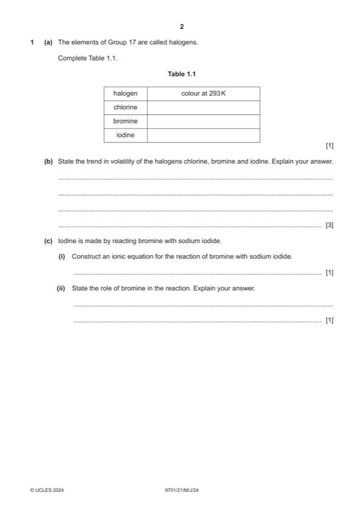

Question 1

Original paper page 2
Part 1(a) — solution
Answer: 1
1
halogen colour at 293 K
chlorine green
bromine brown
iodine (dark) grey
All three correct for one mark
Mark points
- Correct result: 1
Part 1(b) — solution
- [M1] (it / volatility) decreases 3
- [M2] more electrons in molecules
- [M3] (so) increased strength of instantaneous dipole – induced dipole forces (of attraction)
Mark points
- [M1] (it / volatility) decreases 3
- [M2] more electrons in molecules
- [M3] (so) increased strength of instantaneous dipole – induced dipole forces (of attraction)
Part 1(c)(i) — solution
- Br2 + 2I– → 2Br – + I2 1
Mark points
- Br2 + 2I– → 2Br – + I2 1
Part 1(c)(ii) — solution
Answer: AND
(Br2 / bromine is an) oxidising agent 1
AND
removes electron(s) from iodide (ions) I– OR increases the oxidation number of I– / iodide (ion)
Mark points
- Correct result: AND
Part 1(d)(i) — solution
Answer: OR
- NaBr + H2SO4 → HBr + NaHSO4 1
- 2NaBr + H2SO4 → 2HBr + Na2SO4
Mark points
- NaBr + H2SO4 → HBr + NaHSO4 1
- 2NaBr + H2SO4 → 2HBr + Na2SO4
Part 1(d)(ii) — solution
- [M1] sodium chloride 3
- [M2] Cl – is not a strong enough reducing agent to reduce H2SO4
- [M3] Br– & I– are strong enough reducing agents to react (further) with (the S in) H2SO4
- [M2] and M3
- [M2] ability to behave as reducing agents increases down the group
- [M3] EITHER Cl – is not strong enough to reduce H2SO4 OR Br – and I– react (further) with (the S in) H2SO4
Mark points
- [M1] sodium chloride 3
- [M2] Cl – is not a strong enough reducing agent to reduce H2SO4
- [M3] Br– & I– are strong enough reducing agents to react (further) with (the S in) H2SO4
- [M2] and M3
- [M2] ability to behave as reducing agents increases down the group
- [M3] EITHER Cl – is not strong enough to reduce H2SO4 OR Br – and I– react (further) with (the S in) H2SO4